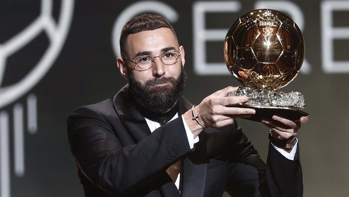

|  | |
|---|---|
| Nama | Karim Mostafa Benzema |
| Tempat/Tanggal Lahir | Lyon, 19 Desember 1987 |
| Orang Tua | Wahida Djebbara dan Hafid Benzema |
| Istri | Cora Gauthier |
| Tim Saat Ini | Timnas Perancis dan Real Madrid |
| Karier Junior | 1995-1996 bermain di SC bron Terrailon 1996-2004 bermain di olympique lyon U19 |
| Karier Senior | 2004-2009 bermain di Lyon 2009-Sekarang bermain di Real Madrid |
| Karier di Timnas | 2004-20022 bermain di Timnas Perancis |
| Pengharggan | 2022 Ballon d'Or 2022 Trofi Pichichi 2022 Pemain Pria Terbaik UEFA 2021 Penghargaan La Liga untuk Player of the Month |